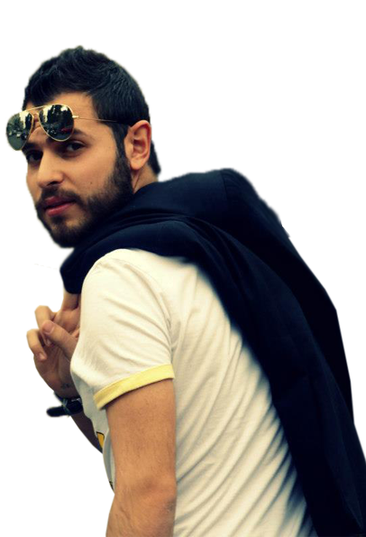
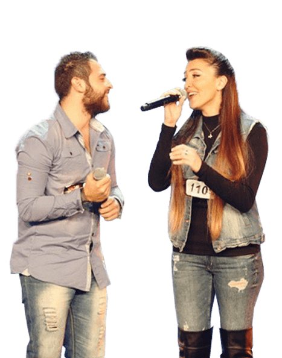
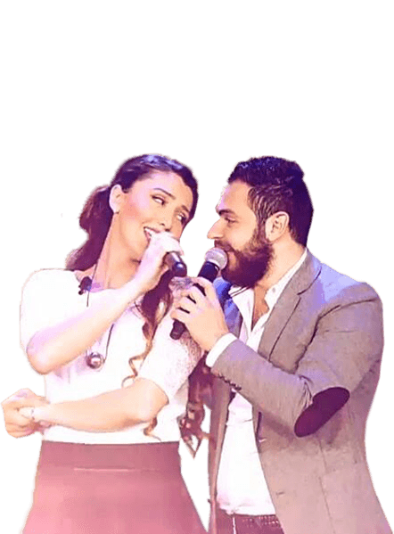

الموقع الرسمى لريمون يزبك
" الموسيقى هي خير معبر عندما تعجز الكلمات عن الترجمة وربما تكون الموسيقى واحدة من أجمل مخلوقات الله ".
ريمون يزبك فنان سوري , محبوب , صاحب الصوت الجميل و الضحكة الحلوة , ولد في سوريا مدينة حلب
22/1/1990
كان موعد الشهرة ينتظره مع برنامج الاكس فاكتور ع قناة العربية المشهورة ام بي سي , فكان مشتركا ضمن عشرة مشتركين في فريق المطربة و الممثلة دنيا سمير غانم وكانت عضوة لجنة الحكم في البرنامج .
فغنى اطرب ابدع وتفنن فتح ابواب حدائق وبساتين الاغاني القديمة والجديدة فغنها باحساسه بشخصيته وبلونة الخاص والجميل مر بعديد العقبات والعثرات اثناء البرنامج ورغم ذلك فهمو يقول العثرات تجعل من الشخص انسانا قويا ومن الفنان مبدعا واذا ما غامرت ما استفدت شيئا اضافة الى انه طموح فكان الطموح بالنسبة له الشيء الوحيد الذي يوصله الى هدفه حلمه وهو الاكس فاكتور .

The X Factor ريمون و تانيا فى
قدم الثنائي السوري ريمون وتانيا أغنية "بالعكس" بطريقتيهما الإنجليزية والعربية، فخطفا الأسماع والأنظار لانسجامهما و قد نالوا إعجاب لجنة الحكم إليسا و دنيا سمير غانم و راغب علامة و نالوا إعجاب الحضور . و تأهلوا للحلقه التالية

The X Factor ريمون و تانيا فى
قدم الثنائلى السورى ريمون و تانيا أغنية بلغي كل مواعيدي . و حازت على إعجاب الجميع
